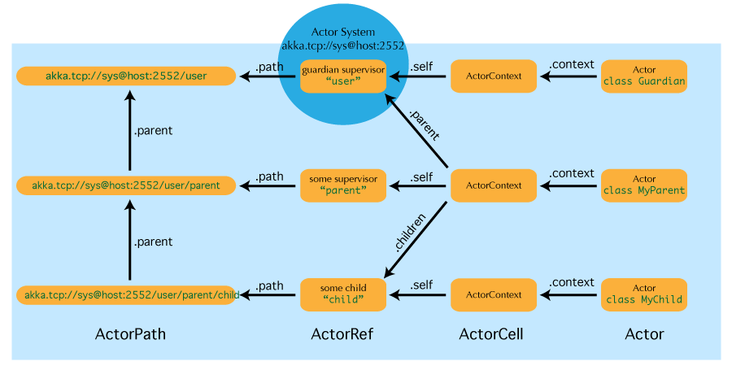

Actor References, Paths and Addresses
This chapter describes how actors are identified and located within a possibly distributed actor system. It ties into the central idea that Actor Systems form intrinsic supervision hierarchies as well as that communication between actors is transparent with respect to their placement across multiple network nodes.

The above image displays the relationship between the most important entities within an actor system, please read on for the details.
What is an Actor Reference?
An actor reference is a subtype of ActorRef, whose foremost purpose is to support sending messages to the actor it represents. Each actor has access to its canonical (local) reference through the self field; this reference is also included as sender reference by default for all messages sent to other actors. Conversely, during message processing the actor has access to a reference representing the sender of the current message through the sender() method.
There are several different types of actor references that are supported depending on the configuration of the actor system:
- Purely local actor references are used by actor systems which are not configured to support networking functions. These actor references will not function if sent across a network connection to a remote JVM.
- Local actor references when remoting is enabled are used by actor systems which support networking functions for those references which represent actors within the same JVM. In order to also be reachable when sent to other network nodes, these references include protocol and remote addressing information.
- There is a subtype of local actor references which is used for routers (i.e. actors mixing in the
Routertrait). Its logical structure is the same as for the aforementioned local references, but sending a message to them dispatches to one of their children directly instead. - Remote actor references represent actors which are reachable using remote communication, i.e. sending messages to them will serialize the messages transparently and send them to the remote JVM.
- There are several special types of actor references which behave like local actor references for all practical purposes:
PromiseActorRefis the special representation of aPromisefor the purpose of being completed by the response from an actor.akka.pattern.askcreates this actor reference.DeadLetterActorRefis the default implementation of the dead letters service to which Akka routes all messages whose destinations are shut down or non-existent.EmptyLocalActorRefis what Akka returns when looking up a non-existent local actor path: it is equivalent to aDeadLetterActorRef, but it retains its path so that Akka can send it over the network and compare it to other existing actor references for that path, some of which might have been obtained before the actor died.
- And then there are some one-off internal implementations which you should never really see:
- There is an actor reference which does not represent an actor but acts only as a pseudo-supervisor for the root guardian, we call it “the one who walks the bubbles of space-time”.
- The first logging service started before actually firing up actor creation facilities is a fake actor reference which accepts log events and prints them directly to standard output; it is
Logging.StandardOutLogger.
What is an Actor Path?
Since actors are created in a strictly hierarchical fashion, there exists a unique sequence of actor names given by recursively following the supervision links between child and parent down towards the root of the actor system. This sequence can be seen as enclosing folders in a file system, hence we adopted the name “path” to refer to it, although actor hierarchy has some fundamental difference from file system hierarchy.
An actor path consists of an anchor, which identifies the actor system, followed by the concatenation of the path elements, from root guardian to the designated actor; the path elements are the names of the traversed actors and are separated by slashes.
What is the Difference Between Actor Reference and Path?
An actor reference designates a single actor and the life-cycle of the reference matches that actor’s life-cycle; an actor path represents a name which may or may not be inhabited by an actor and the path itself does not have a life-cycle, it never becomes invalid. You can create an actor path without creating an actor, but you cannot create an actor reference without creating corresponding actor.
You can create an actor, terminate it, and then create a new actor with the same actor path. The newly created actor is a new incarnation of the actor. It is not the same actor. An actor reference to the old incarnation is not valid for the new incarnation. Messages sent to the old actor reference will not be delivered to the new incarnation even though they have the same path.
Actor Path Anchors
Each actor path has an address component, describing the protocol and location by which the corresponding actor is reachable, followed by the names of the actors in the hierarchy from the root up. Examples are:
"akka://my-sys/user/service-a/worker1" // purely local
"akka.tcp://my-sys@host.example.com:5678/user/service-b" // remote
Here, akka.tcp is the default remote transport for the 2.4 release; other transports are pluggable. The interpretation of the host and port part (i.e. host.example.com:5678 in the example) depends on the transport mechanism used, but it must abide by the URI structural rules.
Logical Actor Paths
The unique path obtained by following the parental supervision links towards the root guardian is called the logical actor path. This path matches exactly the creation ancestry of an actor, so it is completely deterministic as soon as the actor system’s remoting configuration (and with it the address component of the path) is set.
Physical Actor Paths
While the logical actor path describes the functional location within one actor system, configuration-based remote deployment means that an actor may be created on a different network host than its parent, i.e. within a different actor system. In this case, following the actor path from the root guardian up entails traversing the network, which is a costly operation. Therefore, each actor also has a physical path, starting at the root guardian of the actor system where the actual actor object resides. Using this path as sender reference when querying other actors will let them reply directly to this actor, minimizing delays incurred by routing.
One important aspect is that a physical actor path never spans multiple actor systems or JVMs. This means that the logical path (supervision hierarchy) and the physical path (actor deployment) of an actor may diverge if one of its ancestors is remotely supervised.
Actor path alias or symbolic link?
As in some real file-systems you might think of a “path alias” or “symbolic link” for an actor, i.e. one actor may be reachable using more than one path. However, you should note that actor hierarchy is different from file system hierarchy. You cannot freely create actor paths like symbolic links to refer to arbitrary actors. As described in the above logical and physical actor path sections, an actor path must be either logical path which represents supervision hierarchy, or physical path which represents actor deployment.
How are Actor References obtained?
There are two general categories to how actor references may be obtained: by creating actors or by looking them up, where the latter functionality comes in the two flavours of creating actor references from concrete actor paths and querying the logical actor hierarchy.
Creating Actors
An actor system is typically started by creating actors beneath the guardian actor using the ActorSystem.actorOf method and then using ActorContext.actorOf from within the created actors to spawn the actor tree. These methods return a reference to the newly created actor. Each actor has direct access (through its ActorContext) to references for its parent, itself and its children. These references may be sent within messages to other actors, enabling those to reply directly.
Looking up Actors by Concrete Path
In addition, actor references may be looked up using the ActorSystem.actorSelection method. The selection can be used for communicating with said actor and the actor corresponding to the selection is looked up when delivering each message.
To acquire an ActorRef that is bound to the life-cycle of a specific actor you need to send a message, such as the built-in Identify message, to the actor and use the sender() reference of a reply from the actor.
Absolute vs. Relative Paths
In addition to ActorSystem.actorSelection there is also ActorContext.actorSelection, which is available inside any actor as context.actorSelection. This yields an actor selection much like its twin on ActorSystem, but instead of looking up the path starting from the root of the actor tree it starts out on the current actor. Path elements consisting of two dots ("..") may be used to access the parent actor. You can for example send a message to a specific sibling:
context.actorSelection("../brother") ! msg
Absolute paths may also be looked up on context in the usual way, i.e.
context.actorSelection("/user/serviceA") ! msg
will work as expected.
Querying the Logical Actor Hierarchy
Since the actor system forms a file-system like hierarchy, matching on paths is possible in the same way as supported by Unix shells: you may replace (parts of) path element names with wildcards (*«*»* and «?») to formulate a selection which may match zero or more actual actors. Because the result is not a single actor reference, it has a different type ActorSelection and does not support the full set of operations an ActorRef does. Selections may be formulated using the ActorSystem.actorSelection and ActorContext.actorSelection methods and do support sending messages:
context.actorSelection("../*") ! msg
will send msg to all siblings including the current actor. As for references obtained using actorSelection, a traversal of the supervision hierarchy is done in order to perform the message send. As the exact set of actors which match a selection may change even while a message is making its way to the recipients, it is not possible to watch a selection for liveliness changes. In order to do that, resolve the uncertainty by sending a request and gathering all answers, extracting the sender references, and then watch all discovered concrete actors. This scheme of resolving a selection may be improved upon in a future release.
Summary: actorOf vs. actorSelection
What the above sections described in some detail can be summarized and memorized as follows:
actorOfonly ever creates a new actor, and it creates it as a direct child of the context on which this method is invoked (which may be any actor or actor system).actorSelectiononly ever looks up existing actors when messages are delivered, i.e. does not create actors, or verify existence of actors when the selection is created.
Actor Reference and Path Equality
Equality of ActorRef match the intention that an ActorRef corresponds to the target actor incarnation. Two actor references are compared equal when they have the same path and point to the same actor incarnation. A reference pointing to a terminated actor does not compare equal to a reference pointing to another (re-created) actor with the same path. Note that a restart of an actor caused by a failure still means that it is the same actor incarnation, i.e. a restart is not visible for the consumer of the ActorRef.
If you need to keep track of actor references in a collection and do not care about the exact actor incarnation you can use the ActorPath as key, because the identifier of the target actor is not taken into account when comparing actor paths.
Reusing Actor Paths
When an actor is terminated, its reference will point to the dead letter mailbox, DeathWatch will publish its final transition and in general it is not expected to come back to life again (since the actor life cycle does not allow this). While it is possible to create an actor at a later time with an identical path—due to it being impossible to enforce the opposite without keeping the set of all actors ever created available—this is not good practice: messages sent with actorSelection to an actor which “died” suddenly start to work again, but without any guarantee of ordering between this transition and any other event, hence the new inhabitant of the path may receive messages which were destined for the previous tenant.
It may be the right thing to do in very specific circumstances, but make sure to confine the handling of this precisely to the actor’s supervisor, because that is the only actor which can reliably detect proper deregistration of the name, before which creation of the new child will fail.
It may also be required during testing, when the test subject depends on being instantiated at a specific path. In that case it is best to mock its supervisor so that it will forward the Terminated message to the appropriate point in the test procedure, enabling the latter to await proper deregistration of the name.
The Interplay with Remote Deployment
When an actor creates a child, the actor system’s deployer will decide whether the new actor resides in the same JVM or on another node. In the second case, creation of the actor will be triggered via a network connection to happen in a different JVM and consequently within a different actor system. The remote system will place the new actor below a special path reserved for this purpose and the supervisor of the new actor will be a remote actor reference (representing that actor which triggered its creation). In this case, context.parent (the supervisor reference) and context.path.parent (the parent node in the actor’s path) do not represent the same actor. However, looking up the child’s name within the supervisor will find it on the remote node, preserving logical structure e.g. when sending to an unresolved actor reference.

What is the Address part used for?
When sending an actor reference across the network, it is represented by its path. Hence, the path must fully encode all information necessary to send messages to the underlying actor. This is achieved by encoding protocol, host and port in the address part of the path string. When an actor system receives an actor path from a remote node, it checks whether that path’s address matches the address of this actor system, in which case it will be resolved to the actor’s local reference. Otherwise, it will be represented by a remote actor reference.
Top-Level Scopes for Actor Paths
At the root of the path hierarchy resides the root guardian above which all other actors are found; its name is "/". The next level consists of the following:
"/user"is the guardian actor for all user-created top-level actors; actors created usingActorSystem.actorOfare found below this one."/system"is the guardian actor for all system-created top-level actors, e.g. logging listeners or actors automatically deployed by configuration at the start of the actor system."/deadLetters"is the dead letter actor, which is where all messages sent to stopped or non-existing actors are re-routed (on a best-effort basis: messages may be lost even within the local JVM)."/temp"is the guardian for all short-lived system-created actors, e.g. those which are used in the implementation ofActorRef.ask."/remote"is an artificial path below which all actors reside whose supervisors are remote actor references
The need to structure the name space for actors like this arises from a central and very simple design goal: everything in the hierarchy is an actor, and all actors function in the same way. Hence you can not only look up the actors you created, you can also look up the system guardian and send it a message (which it will dutifully discard in this case). This powerful principle means that there are no quirks to remember, it makes the whole system more uniform and consistent.
If you want to read more about the top-level structure of an actor system, have a look at The Top-Level Supervisors.